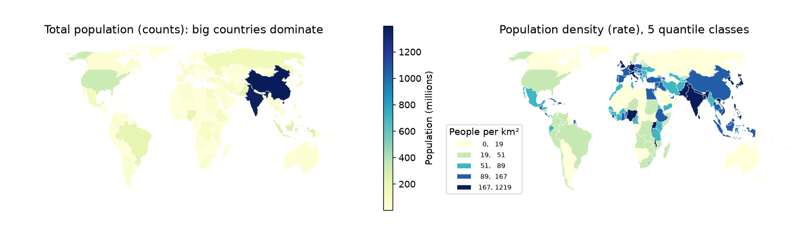
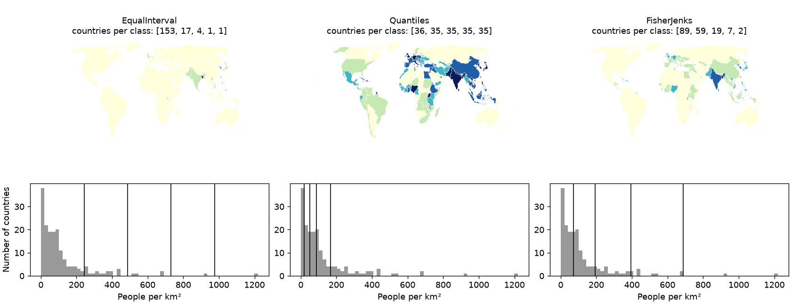
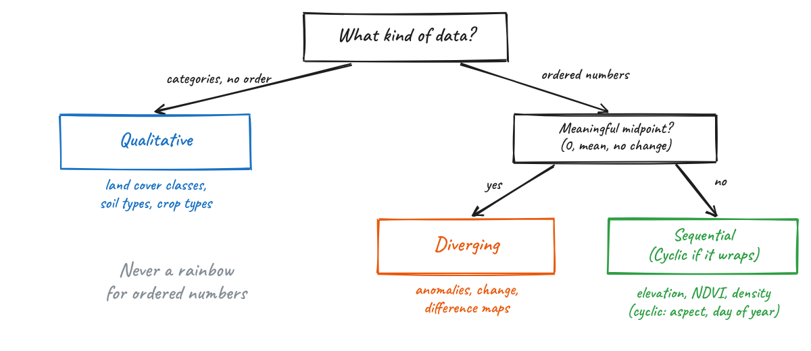
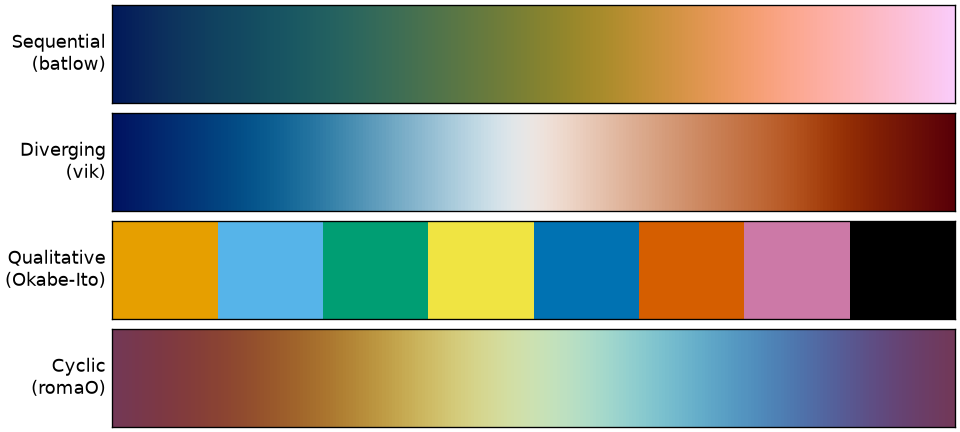
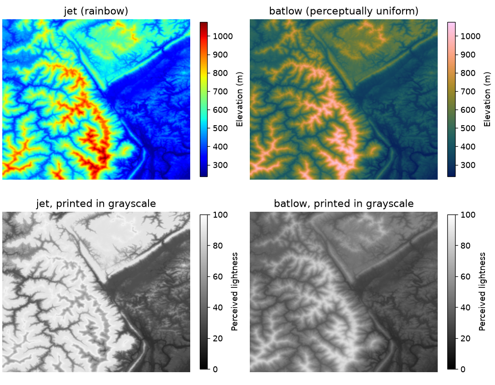
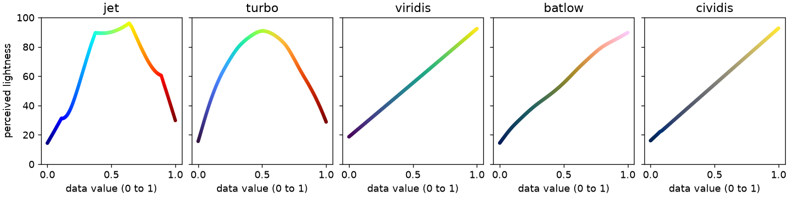
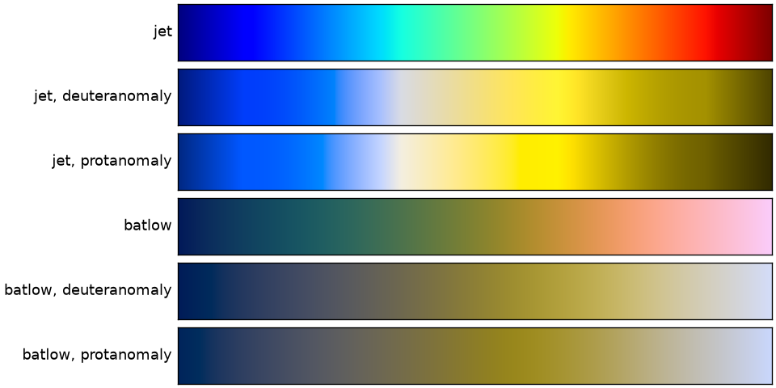
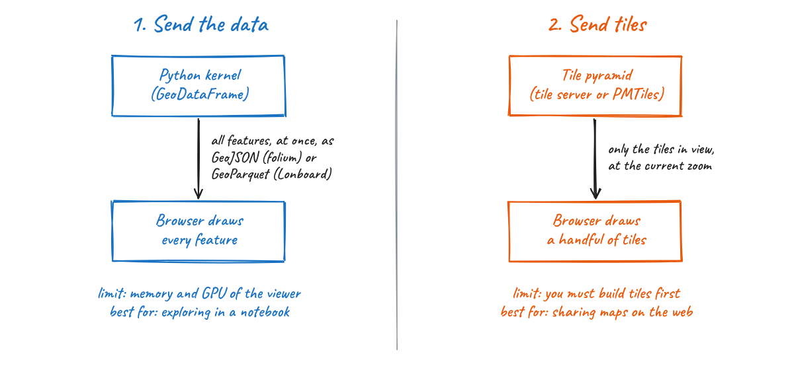
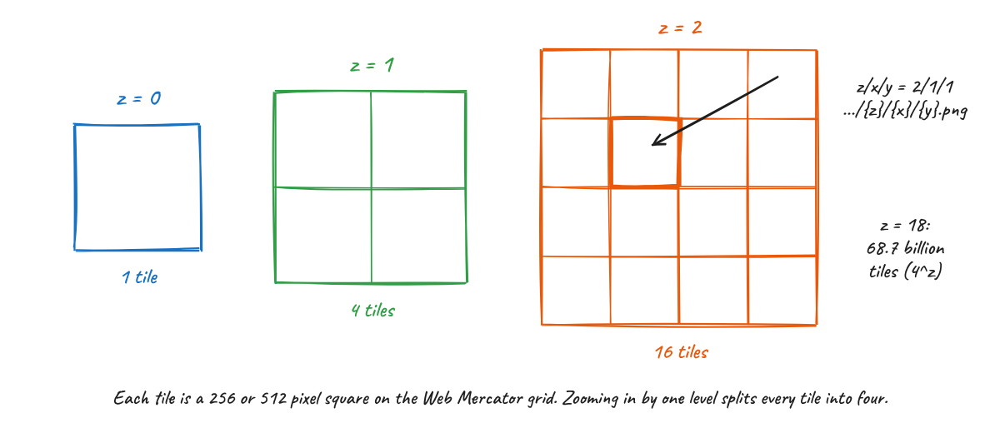
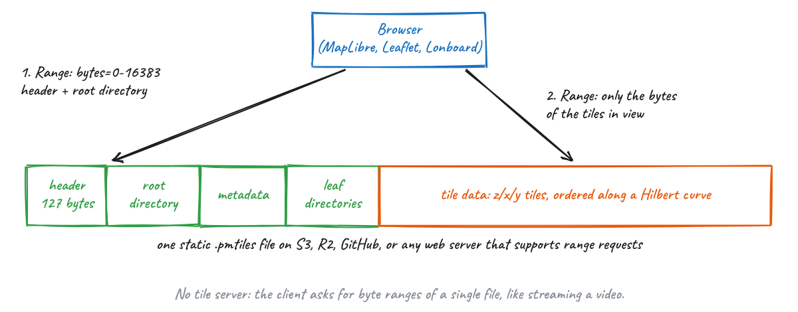

26. Communicating with Maps and Visualizations#
Throughout this course you have searched, loaded, processed and scaled geospatial data. In almost every project, the last step is the one other people actually see: a figure or a map. A good visualization lets your audience see the pattern you found in seconds. A poor one hides it, or worse, shows a pattern that is not in the data.
In this lecture we review a few principles of visual communication (most of them apply to any chart, not only maps), take a close look at color, survey the Python packages available for geospatial visualization, and discuss the difference between visualizing data and serving map tiles, including the PMTiles format. In the hands-on notebook you will apply each of these ideas in code.
26.1. Explore or Explain?#
Before choosing a chart type or a color, ask who the figure is for.
Exploratory visualization is for you. You make many quick plots, often interactive, to understand the data, find errors and form hypotheses. Speed and interactivity matter more than polish.
Explanatory visualization is for an audience. You make one figure that carries one message. Every element on it should support that message, and anything that does not should be removed.
Most bad figures in papers and reports are exploratory plots that were never turned into explanatory ones: default colors, axis labels with variable names such as pop_est, no units, and a legend nobody can read.
26.2. Principles that Apply to Every Figure#
These principles are not specific to maps. They apply equally to a line chart of an NDVI time series or a bar chart of accuracy per land cover class.
One figure, one message. If you cannot state the message in one sentence, the figure is probably trying to do too much. Split it.
Choose the encoding by how precisely it must be read. People compare positions along a common scale most accurately, followed by lengths, angles, areas, and finally color intensity (Cleveland and McGill, 1984). Color is the least precise encoding, yet a map uses it for its main variable. That is a reason to use color carefully, and a reason to add a chart next to your map when exact comparison matters.
A map is not always the answer. If location is not part of the message, a sorted bar chart or a scatter plot is often clearer than a choropleth map. Ask yourself whether the spatial pattern is the point.
Label everything a reader needs, in plain words: a title that states the finding, axis labels or a legend with units, the data source and date. Replace variable names such as
pop_estwith “Population (millions)”.Use the same scale when panels are compared. Two maps side by side with different color ranges invite the reader to compare colors that mean different things. In Matplotlib this means setting the same
vminandvmaxon every panel and adding a single shared colorbar.Be honest about the data range. Clipping outliers (for example, the
robust=Trueoption in Xarray plotting uses the 2nd and 98th percentiles) can reveal structure, but say that you did it, and use a colorbar with extended ends so readers know values continue beyond it.Design for everyone. Around 8% of men and 0.5% of women have some form of color vision deficiency, most often red-green. Your figure will also be projected on washed-out screens and printed in grayscale.
26.3. Maps Have Extra Rules#
Maps add a few decisions that charts do not have.
26.3.1. Match the map type to the data#
Data |
Typical map type |
Example |
|---|---|---|
Rates or ratios for areas |
Choropleth (filled polygons) |
Population density by country |
Counts or totals at locations |
Proportional symbols |
City population as circle size |
Continuous fields |
Raster or contour (isarithmic) map |
Elevation, temperature, NDVI |
Categories |
Qualitative colors |
Land cover classes |
Movement between places |
Flow or arc map |
Commuting, migration, trade |
26.3.2. Normalize before you make a choropleth#
A choropleth colors areas, so the reader’s eye is drawn to large areas. If you color areas by a total count (people, cases, hectares of cropland), large units will look important simply because they are large and contain more of everything. Map rates instead: people per km², cases per 100,000 people, percent of area under cropland. Show counts with proportional symbols. Fig. 26.1 shows the same data mapped both ways.


Fig. 26.1 Left: a choropleth of total population is dominated by the two largest countries. Right: population density (people per km², computed in an equal-area projection) shows the actual pattern. Data: Natural Earth.#
26.3.3. Classify thoughtfully#
A choropleth can be unclassed (a continuous color ramp) or classed (values grouped into 4 to 7 classes, each with one color). Classes are easier to read and to match with the legend, but the class breaks you choose change the map. The mapclassify package, used by GeoPandas through the scheme= argument, implements the common schemes:
Equal interval: classes of equal width. Simple to explain, but with skewed data almost every unit falls in the first class.
Quantiles: each class holds the same number of units. Every color appears equally often, but very different values can share a class.
Natural breaks (Fisher-Jenks): breaks placed where they minimize the variance within classes. A good default for skewed data.
Fig. 26.2 shows how much the message changes with the scheme. Always look at a histogram of your data before you choose, and state the scheme in the legend or caption.


Fig. 26.2 The same population density data in five classes using three classification schemes. The histograms show where each scheme places its class breaks (vertical lines).#
26.3.4. Choose the projection on purpose#
You learned in the CRS lectures that every projection distorts something. For maps that compare areas (choropleths, density maps), use an equal-area projection such as Equal Earth (EPSG:8857) for the world or an Albers equal-area projection for a country. Web Mercator (EPSG:3857), the projection of almost every web map, preserves shapes locally but makes Greenland look as large as Africa, which is about 14 times bigger. Also compute areas and densities in an equal-area CRS, never in degrees.
26.3.5. Include the map elements your reader needs#
A title that states the message, a legend with units, the data source and date, and the CRS. Add a scale bar for local and regional maps (a scale bar is misleading on a world map because scale varies across it) and a north arrow only when north is not up.
26.4. Color#
Color is the main channel of most maps, and also the one most often misused. A colormap (or color palette) maps a data value to a color. The first question is what kind of data you have, as summarized in Fig. 26.3.


Fig. 26.3 Choosing the type of colormap from the type of data.#
Sequential colormaps go from light to dark (or dark to light) and are used for ordered data from low to high, such as elevation, NDVI or density.
Diverging colormaps have a neutral light color in the middle and two hues at the ends. They are for data with a meaningful midpoint: zero change, an anomaly, a difference between two dates. Center the colormap on that midpoint (
center=0in Xarray, ormatplotlib.colors.TwoSlopeNorm).Qualitative colormaps use distinct hues with similar lightness, with no implied order. They are for categories such as land cover classes. Keep the number of categories small (about 8 or fewer) and use a colorblind-safe set such as Okabe-Ito.
Cyclic colormaps start and end at the same color. They are for values that wrap around: aspect, wind direction, day of year, phase.


Fig. 26.4 One example of each colormap type: batlow, vik and romaO from the Scientific Colour Maps, and the Okabe-Ito qualitative palette.#
26.4.1. Why not the rainbow?#
The rainbow colormap (jet in Matplotlib and MATLAB, and the default in both until around 2015) is still everywhere in remote sensing and climate science. It looks vivid, but it misrepresents data in several ways (Borland and Taylor, 2007; Crameri et al., 2020):
Its lightness goes up and then down. Our eyes read order mostly from lightness, and in
jetthe brightest colors (cyan and yellow) sit in the middle of the data range, not at an end. A reader cannot tell from the colors alone whether red means more or less than cyan.It creates boundaries that are not in the data. Lightness changes fast in some parts of the colormap (around cyan and yellow) and barely at all in others (the long green band). Smooth data looks like it has sharp edges, and real gradients disappear inside the green.
It fails for readers with color vision deficiency, where the reds and greens collapse into similar colors.
It fails in grayscale, where high and low values print as the same gray.
Fig. 26.5 shows the same elevation data in jet and in the perceptually uniform batlow. In the grayscale versions, the jet map has its highest ridges printed darker than mid-slopes, while batlow keeps the order of elevations.


Fig. 26.5 A digital elevation model shown with jet and batlow (top), and the perceived lightness of each map, which is roughly what a grayscale print shows (bottom). Data: Matplotlib sample DEM.#
You can see the problem directly by plotting the perceived lightness of each colormap from its lowest to its highest value (Fig. 26.6). A good sequential colormap has lightness that changes steadily in one direction. turbo, an improved rainbow released by Google in 2019, is smoother than jet but its lightness still rises and falls, so it has the same order problem.


Fig. 26.6 Perceived lightness (J’ in the CAM02-UCS color space) across five colormaps. Only viridis, batlow and cividis change monotonically.#


Fig. 26.7 Simulated appearance of jet and batlow for viewers with the two most common forms of color vision deficiency.#
So what should you use instead?
For sequential data:
viridis(the Matplotlib default since version 2.0),cividis(optimized for color vision deficiency by Nuñez et al., 2018), orbatlowfrom the Scientific Colour Maps.For diverging data:
vik,romaorbamfrom the Scientific Colour Maps, or ColorBrewer’sRdBuandBrBG.For classed choropleths: the ColorBrewer palettes (for example
YlGnBu,OrRd), which were designed for maps with a small number of classes. Use the ColorBrewer website to check whether a palette is colorblind safe and print friendly.For categories: Okabe-Ito or Matplotlib’s
tab10, and keep the number of classes small.
In Python, cmcrameri provides the Scientific Colour Maps, cmocean provides colormaps designed for oceanography, and colorcet provides a large set of perceptually uniform maps. All of them work with Matplotlib, GeoPandas and Xarray.
A rule of thumb
If your data are ordered (low to high), your colors must be ordered by lightness. If you could not sort the colors in your legend from light to dark without looking at the numbers, choose another colormap.
26.5. The Python Visualization Landscape#
There are many Python packages for geospatial visualization, and they overlap a lot. A useful way to organize them is by output (a static figure or an interactive map) and by how much data they can handle.
26.5.1. Static maps and figures#
Package |
Use it for |
|---|---|
Matplotlib |
The foundation for static figures in Python. Everything below draws on it. |
GeoPandas |
Quick maps of GeoDataFrames, including classed choropleths through |
Xarray |
Rasters and gridded data, with built-in support for |
Cartopy |
Publication maps with projections, coastlines and gridlines, especially for global and climate data. |
contextily |
Adding a web basemap (tiles) behind a GeoPandas plot. |
|
Scientific colormaps. |
26.5.2. Interactive maps#
Package |
How it works |
Good for |
|---|---|---|
folium / GeoPandas |
Leaflet.js; sends data to the browser as GeoJSON |
Small datasets (up to tens of thousands of simple features), quick looks, standalone HTML |
ipyleaflet |
Leaflet.js as a Jupyter widget |
Small datasets with two-way interaction with Python |
leafmap |
One API over several backends (folium, ipyleaflet, MapLibre, Lonboard, and others) |
Teaching, quick exploration, COGs and STAC items, PMTiles |
maplibre (py-maplibregl) |
MapLibre GL JS bindings |
Vector tiles, PMTiles, 3D buildings and terrain |
Lonboard |
deck.gl on the GPU, fed with GeoArrow and GeoParquet |
Large vector datasets (millions of features) in a notebook, COGs and raster PMTiles |
pydeck, kepler.gl |
deck.gl bindings and the kepler.gl application |
Data exploration and storytelling in the browser |
hvPlot / GeoViews + Datashader |
Rasterizes data on the server before sending an image |
Data larger than browser memory, such as billions of points |
Plotly |
General interactive charts, including maps |
Dashboards and figures that mix maps and charts |
You do not need to learn all of them. A good starting set for this course is GeoPandas and Xarray for static figures, .explore() for a quick interactive look at small data, and Lonboard when your data gets large.
26.5.3. Lonboard#
Lonboard is a Python library from Development Seed for fast, interactive visualization of large geospatial data in Jupyter. It is built on deck.gl, a JavaScript library that draws maps on the GPU. Version 0.17, released in October 2026, is the current release as of this lecture.
Why is it fast? Most interactive mapping libraries convert your GeoDataFrame to GeoJSON text, send that text to the browser, and parse it there. That is slow to write, large to transfer and slow to read. Lonboard instead converts your data to GeoArrow, sends it as compressed GeoParquet, and hands the binary arrays almost directly to the GPU. You learned about Arrow and GeoParquet in the scalable vector analysis lecture; Lonboard uses the same ideas for visualization. The result is that a few million points or polygons can be rendered interactively on a laptop.
Things worth knowing:
viz(gdf)creates a map from a GeoDataFrame in one line and picks the layer type for you.For control over styling, create layers yourself:
ScatterplotLayerfor points,PathLayerfor lines,PolygonLayerfor polygons, plusH3HexagonLayer,HeatmapLayer,ArcLayer,TripsLayerand others. Each takes per-feature colors and sizes as NumPy arrays, which you build withlonboard.colormap.apply_continuous_cmaporapply_categorical_cmap. You can pass any Matplotlib colormap, so the color advice above applies directly.Since 2026, the
RasterLayercan display Cloud-Optimized GeoTIFFs (through theasync-geotifflibrary, version 0.16) and raster PMTiles (RasterLayer.from_pmtiles, version 0.14), with reprojection done in the browser.Map.to_html("map.html")saves a standalone HTML file you can share.Limits: Lonboard draws every feature you give it, so the ceiling is the memory of the viewer’s GPU. If your Python session is remote (JupyterHub, Colab), all the data must be downloaded to your browser first. For data larger than that, you need Datashader or tiles.
26.6. Visualizing Data versus Serving Tiles#
When you call gdf.explore() or Lonboard’s viz(), the whole dataset travels from Python to your browser, and the browser draws all of it. That works well in a notebook, up to a point. It does not work for a map of every building on Earth that thousands of people will open on their phones. Web maps solve this problem with tiles. Fig. 26.8 contrasts the two approaches.


Fig. 26.8 Two ways to get geospatial data onto a screen.#
26.6.1. What is a tile?#
A web map splits the world (in Web Mercator) into a pyramid of square tiles (Fig. 26.9). At zoom level 0 one tile covers the whole world. Each zoom level splits every tile into four, so zoom level z has 4^z tiles. Each tile has an address z/x/y, and a map client builds URLs such as https://.../{z}/{x}/{y}.png to request only the tiles that cover the screen at the current zoom. The number of tiles on screen stays roughly constant no matter how large the dataset is.


Fig. 26.9 The tile pyramid used by web maps.#
There are two kinds of tiles:
Raster tiles are images (PNG, JPEG or WebP). The styling is baked in when the tiles are made. Satellite basemaps and rendered imagery are raster tiles.
Vector tiles (usually in the Mapbox Vector Tile format, MVT) contain geometries and attributes, and the browser styles them. You can change colors without rebuilding the tiles, labels stay sharp, and they are usually smaller than images.
Tiles can be made ahead of time (pre-rendered) or on the fly. Dynamic tilers such as TiTiler read a Cloud-Optimized GeoTIFF and return the tile for each request, which is how STAC browsers and the Planetary Computer show imagery without storing tiles.
Two properties of vector tiles matter for you as an analyst. First, geometries are clipped at tile edges, simplified at low zoom levels, and their coordinates are rounded to a grid inside each tile (typically 4096 by 4096). Second, small features are often dropped at low zoom levels so tiles stay small. Tiles are a format for display, not for analysis. Keep your analysis in GeoParquet, COG or Zarr, and create tiles from those files when you need to publish a map.
26.6.2. PMTiles#
Traditionally, serving tiles meant running a tile server, or uploading millions of small tile files to cloud storage, or storing them in an MBTiles (SQLite) file that still needs a server to answer requests. PMTiles, created by the Protomaps project, is a single-file archive for a whole tile pyramid that needs no server at all.
The trick is the same one used by Cloud-Optimized GeoTIFFs: HTTP range requests. A PMTiles file starts with a 127-byte header followed by a root directory, and the specification requires both to fit in the first 16 KB of the file. A client reads those bytes in one request, looks up where the tiles it needs are stored, and then requests only those byte ranges (Fig. 26.10). Tiles are ordered along a Hilbert curve, so tiles that are near each other on the map are near each other in the file and can be fetched in one request.


Fig. 26.10 Inside a PMTiles archive. A client reads the header and root directory, then fetches only the byte ranges of the tiles it needs.#
In practice this means you can host a map of any size by uploading one file to S3, Cloudflare R2, Source Cooperative, or any web server that supports range requests, and pointing MapLibre, Leaflet or OpenLayers at it. To work with PMTiles:
Create vector PMTiles with tippecanoe (version 2.17 or later writes
.pmtilesdirectly, and it is the best tool for large data because it generalizes features at low zoom levels), or with GDAL 3.8 or later, which includes a PMTiles driver. That meansgdf.to_file("out.pmtiles", driver="PMTiles")works from GeoPandas for small and medium datasets.Create raster PMTiles with
rio-pmtilesor convert existing MBTiles with thepmtilescommand line tool.Inspect any PMTiles file, local or remote, at pmtiles.io.
Read PMTiles in Python with the
pmtilespackage, display vector PMTiles withleafmap.maplibregl, and raster PMTiles with Lonboard’sRasterLayer.from_pmtiles.
26.6.3. Which approach should I use?#
Situation |
Approach |
|---|---|
Exploring your own data in a notebook, up to a few million features |
Send the data: GeoPandas |
A figure for a paper, report or slide |
A static map with Matplotlib, GeoPandas or Xarray |
Data larger than your browser can hold |
Aggregate first (H3 hexagons, Datashader), or build tiles |
A map many people will open on the web |
Tiles: PMTiles for vector data or pre-rendered imagery, a dynamic tiler for COGs |
26.7. Summary#
Decide whether a figure is for exploring or for explaining, and give every explanatory figure one message.
Map rates, not counts, in choropleths; choose classification and projection on purpose; label units, sources and dates.
Pick the colormap from the type of data. For ordered data, lightness must change in one direction: use viridis, cividis or batlow, never a rainbow.
Use static figures for publications, folium or
.explore()for small interactive maps, and Lonboard for large data in notebooks.Notebook visualization sends all the data to the browser. Web maps send tiles. PMTiles packs a whole tile pyramid into one file that can be served from static storage.
26.8. Further Reading#
Crameri, Shephard and Heron (2020), The misuse of colour in science communication, and the Scientific Colour Maps.
Matplotlib’s guide on choosing colormaps.
Claus Wilke, Fundamentals of Data Visualization, free online.
ColorBrewer by Cynthia Brewer.
Lonboard documentation and its comparison with other libraries.
PMTiles in the Cloud-Native Geospatial Guide and the Protomaps documentation.